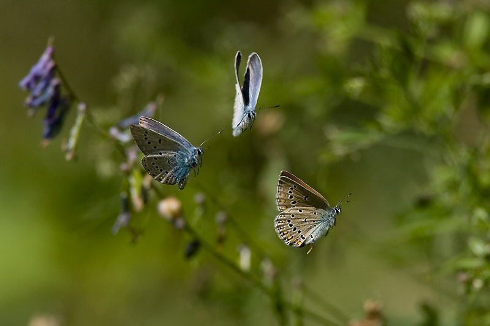
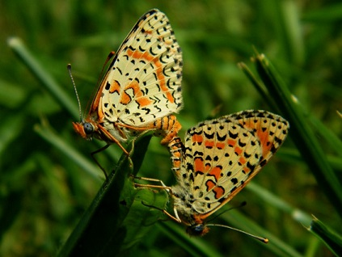
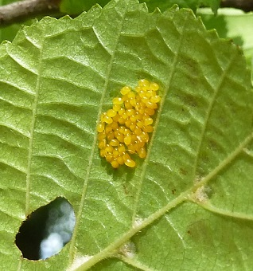
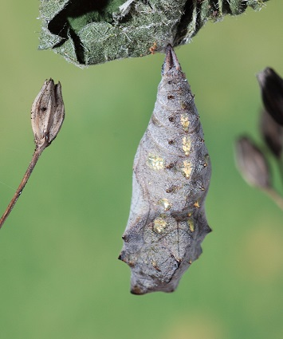
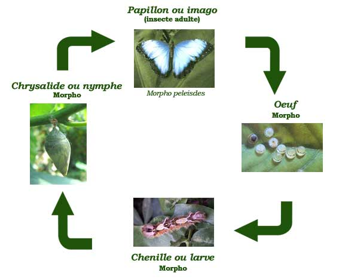

Durée de vie
La durée de vie des papillons est très variable. Elle est de quelques semaines, voire même de quelques jours pour certaines espèces.
C'est le cas du Bombix du mûrier (bombys mori), qui vît très peu de temps. Si peu de temps, qu'il ne se nourrit même pas lorsqu'il est adulte.
En revanche, d'autres espèces vivent beaucoup plus longtemps, en particulier celles qui hivernent en forme adulte.
Parade nuptiale
Les mâles et les femelles peuvent se sentir à plusieurs kilomètres grâce à leurs antennes très sensibles.
Pour se retrouver, mâles et femelles communiquent par signaux visuels, olfactifs ou auditifs.
La parade nuptiale commence lorsque les deux papillons sont rapprochés. Le mâle s'adonne à de véritables danses de séduction. Il poursuit la femelle qui feint de s'enfuir. La poursuite peut durer très longtemps, il se peut que plusieurs mâles luttent pour la même femelle. C'est alors qu'une véritable guerre de parfums s'engage. Chaque mâle libère leur propre parfum, dans l'espoir d'être l'heureux élu qui aura la chance de s'accoupler avec elle.
Les papillons sont prêts à l'accouplement le jour même de leur éclosion. Les mâles peuvent féconder jusqu'à 4 à 5 femelles.
L'accouplement
Lorsqu'une femelle a acceptée les avances d'un mâle, ils se préparent à s'accoupler. Pour cela, ils se placent côte à côte pour faire entrer en contact leur deux abdomens, puis ils se mettent dos à dos.
Un accouplement dure en moyenne une demi-heure, mais il peut aller jusqu'à trois heures.
En général, l'accouplement se fait sur une feuille, mais s'ils sont dérangés ils peuvent s'envoler tout en restant dans cette même position jusqu'à trouver un endroit adapté.
L'oeuf
Après avoir été fécondée, les femelles pondent leur oeufs qu'elles déposent généralement sur les feuilles de la plante hôte.
Une fois pondus, les oeufs sont abandonnés. Le stade d'oeuf dure entre 3 et 8 jours. C'est une période passive durant laquelle sont formées les chenilles.
Les femelles pondent les oeufs par plusieurs centaines, au printemps ou en été.
La chenille
Le stade larvaire a pour fonction d'emmagasiner les nutriments et l'énergie nécessaire à la transformation en papillon.
La chenille est plus active et la plus longue du cycle.
Après la ponte, la chenille découpe l'oeuf et le dévore, c'est là son premier repas. C'est lors de cette période que l'on peut observer le plus gros changement de taille. Elle peut devenir jusqu'à 1000 fois plus grosse qu'à la naissance. Pour parvenir à cette croissance, les chenilles doivent consommer des quantitées considérables d'aliments. Cette extraordinaire croissance les obligent à effectuer plusieurs mues.
Leur dernier rôle est de trouver un endroit sûr pour la nymphose.
Les chenilles sont des proies faciles pour les prédateurs, c'est pourquoi elles sont dotées de différents systèmes de défences. Certaines ont des piquants sur le dos, d'autres ont des formes et des couleurs les rendant pratiquement invisibles sur le feuillage, certaines dégagent des odeurs nauséabondes, et d'autres encore ressemblent à une crotte d'oiseau.
La chrysalide
La phase suivante est la chrysalide, qui durant cette phase, à lieu une totale transformation à l'intérieur de l'insecte.
Des cellules, qui forment une substance jaunâtre sont chargées de la réorganisation de l'anatomie de l'animal, du stade de chenille à celui de papillon. Ce processus est très complexe et est encore méconnu de l'homme.
Ces chrysalides ont des formes et des couleurs diverses adaptées au camouflage car celles-ci sont vulnérables étant immobile et sans défense. Celui-ci est très important car baucoup d'espèces hibernent à ce stade de leur évolution. Les chrysalides restent sous cette forme d'une semaine à plusieurs mois, elles ne se nourrissent pas, respirent à peine et ne peuvent quitter leur attache.
La plupart des chenilles, tissent un cocon de fil de soie avant de faire leur chrysalide à l'intérieur de ce dernier. Le cocon sera une protection supplémentaire contre les intempéries et les prédateurs.
Le jour de la naissance arrive, le papillon soulève avec ses pattes un petit couvercle prévu à cette effet. En quelques secondes, il glisse la tête en bas hors de cet étui et de retourne complètement pour s'accrocher sur la peau vide de la chrysalide.
Là, il déploiera ses ailes et les fera sécher plusieurs heures avant de s'envoler.
Le papillon
Après la sortie de la chrysalide débute la 4ème et dernière phase: l'insecte parfait.
La vie d'insecte ailé commence. Les papillons volent à la recherche de nourriture.
Certaines espèces effectuent des migrations de plusieurs milliers de kilomètres. Leur vie adulte dure normalement quelques semaines. Durant cette période, leur principal but est de trouver une partenaire pour s'accoupler et assurer ainsi la régénération de l'espèce.
Le cycle du papillon
haut de page